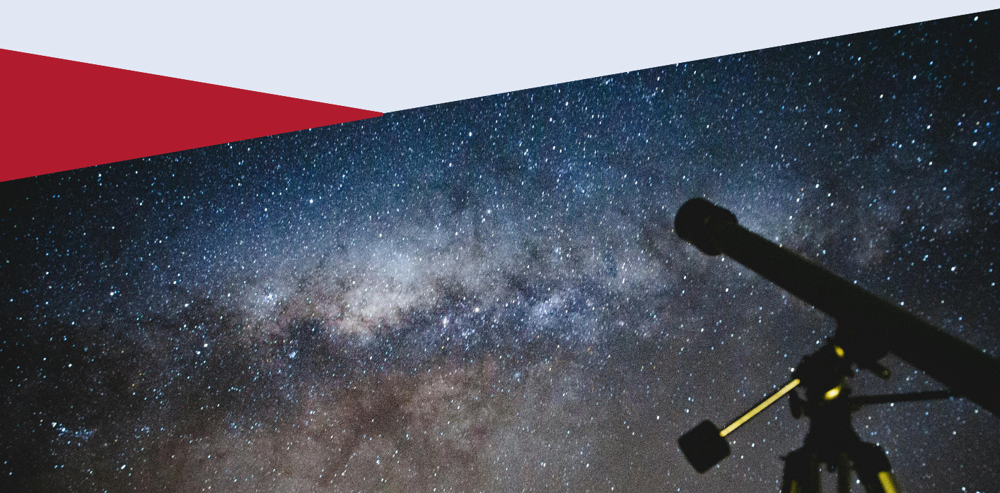

The Bath, Bristol, Exeter, Cardiff Seminar (BBECS) is making its return in 2026, bringing together PhD students in Astronomy from across the South West.
This free event, organised by students, provides an opportunity for postgraduates to expand their academic network, and gain experience presenting research.
The event will be held in the HH Wills Physics Laboratory in the Berry Lecture theatre (3.21) at the University of Bristol in the Berry lecture theatre. For more information on the location and time, please see the schedule.

Timeline: